Intensity-based registration
Course structure
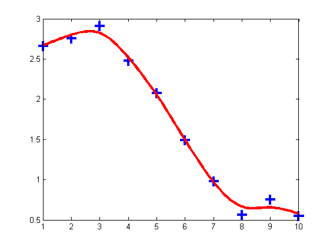
“Fitting functions”

“Registration”

“Segmentation”
Image registration
Determine a geometrical transformation that aligns points in an image with corresponding points in other image(s)

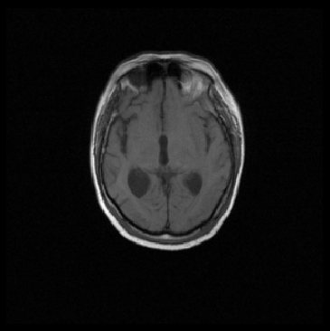
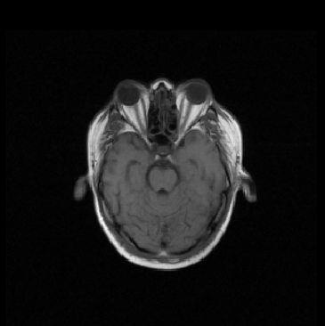
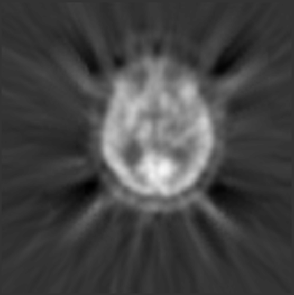

Landmark based registration
- Geometrical transformation: \(\quad \mathbf{y}(\mathbf{x};\mathbf{w}) : \mathbb{R}^{2} \rightarrow \mathbb{R}^{2}\) or \(\mathbb{R}^{3} \rightarrow \mathbb{R}^{3}\)
- Similarity measure: \(\quad\mathcal{D}(\mathbf{w})\)
- Regularization: \(\quad\mathcal{S}(\mathbf{w})\)
- Optimization algorith: \(\quad\mathcal{J}(\mathbf{w}) =
\mathcal{D}(\mathbf{w}) + \alpha\mathcal{S}(\mathbf{w})\)

I’m too lazy to put landmarks. Can’t we use images directly?
Miscalibration of intensities
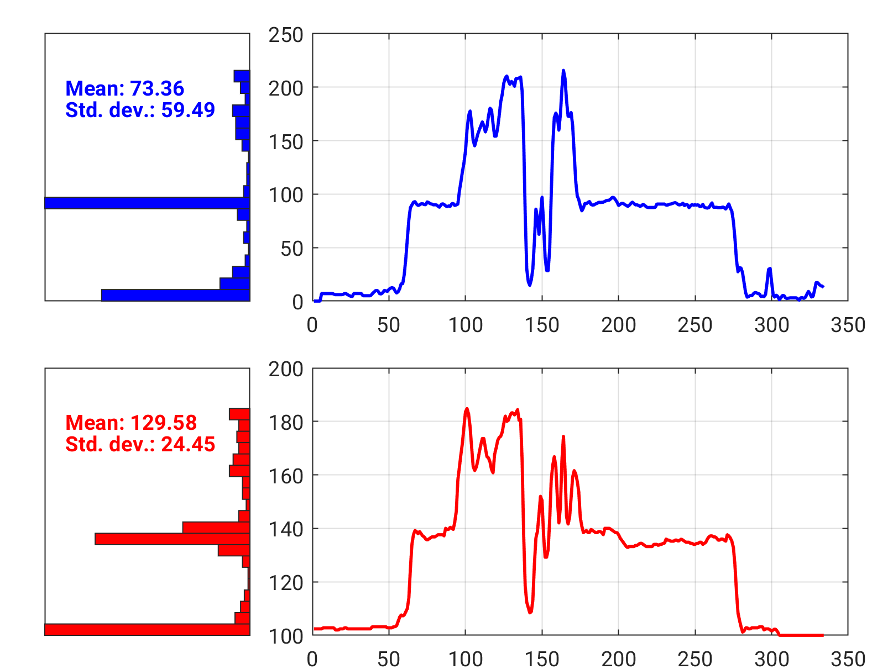
dummy
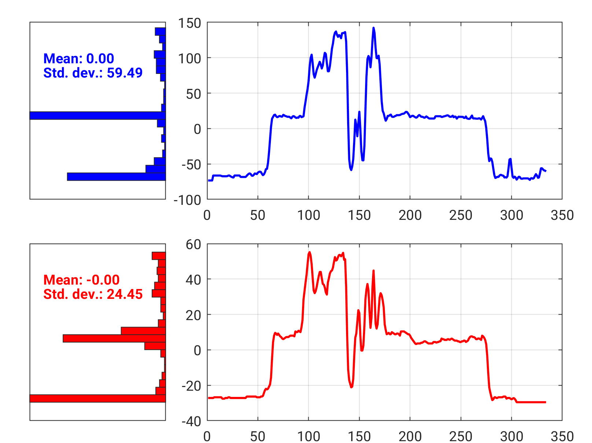
Substract mean

Divide by standard deviation
Inter-modality registration
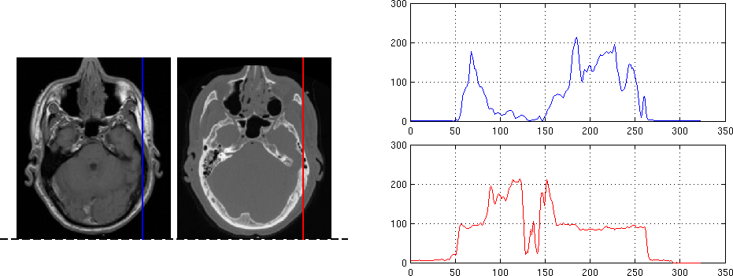

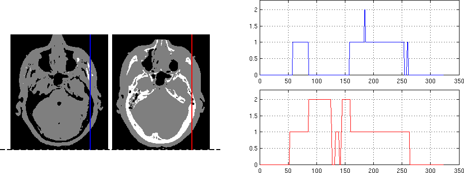

Inter-modality registration
- Idea: build a joint histogram
Intensity in \(\mathcal{T}\)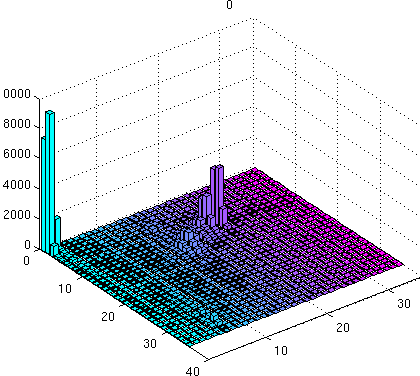Intensity in \(\mathcal{R}\)

\(\mathcal{T}\)
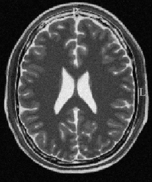\(\mathcal{R}\)

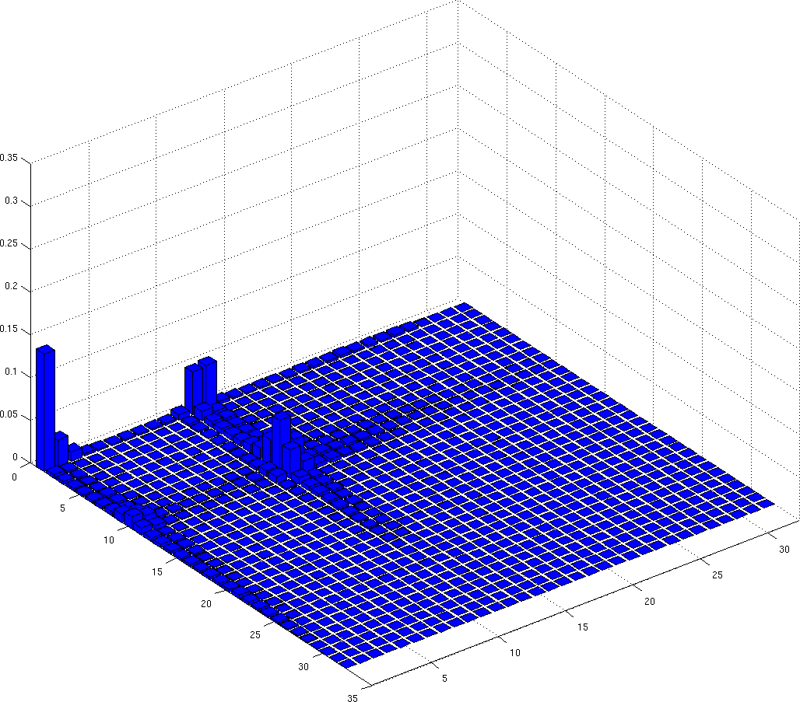
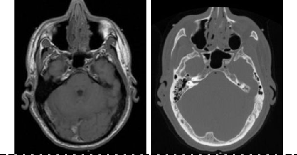
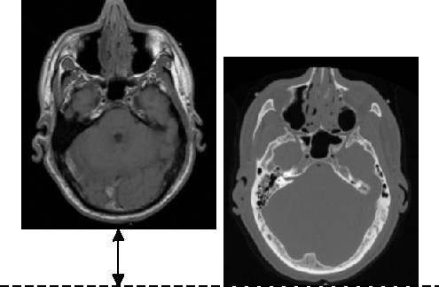
CT intensities
MR intensities
Inter-modality registration
- Wait a minute…